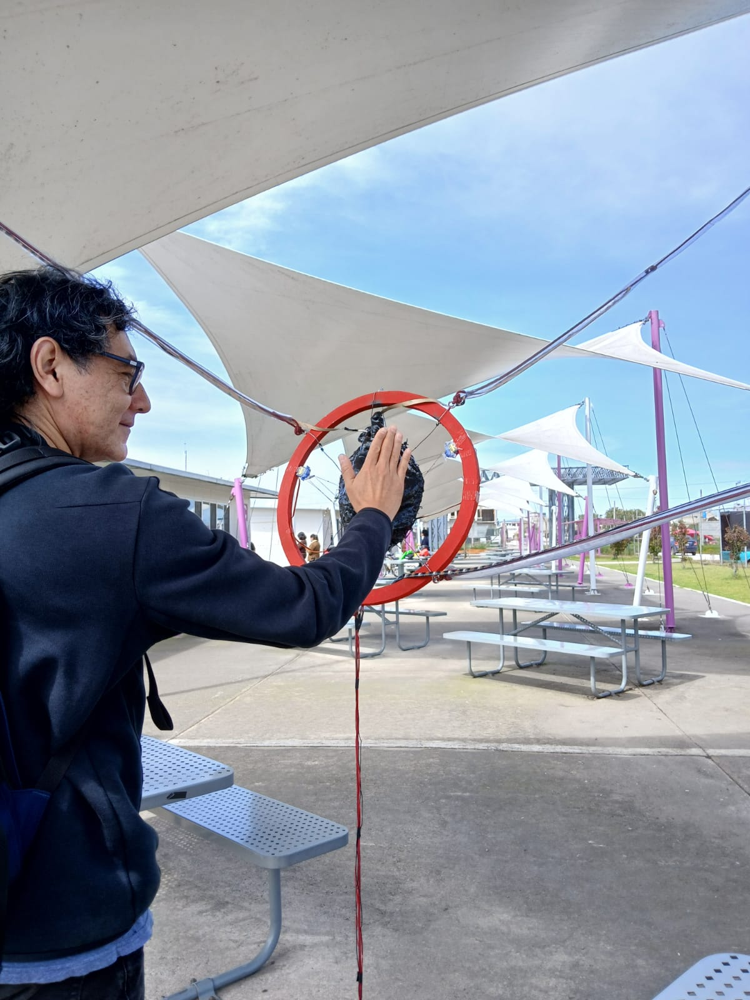
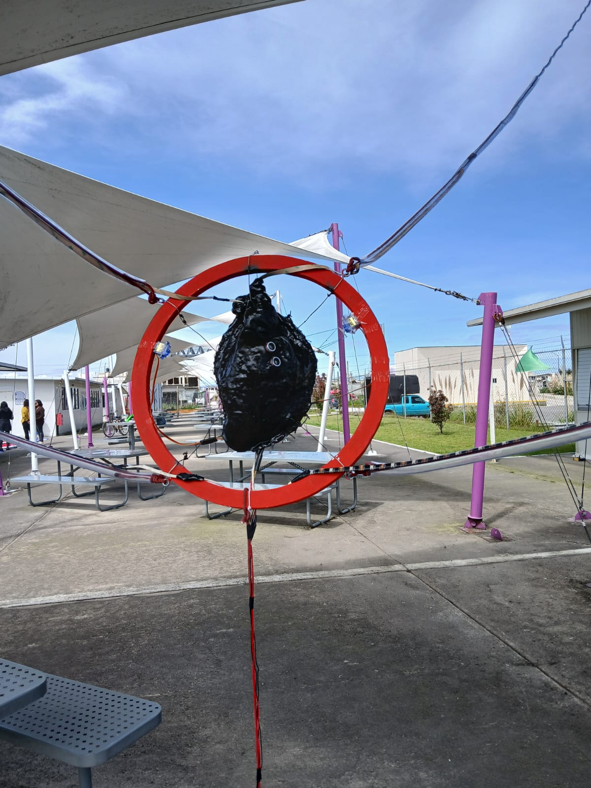
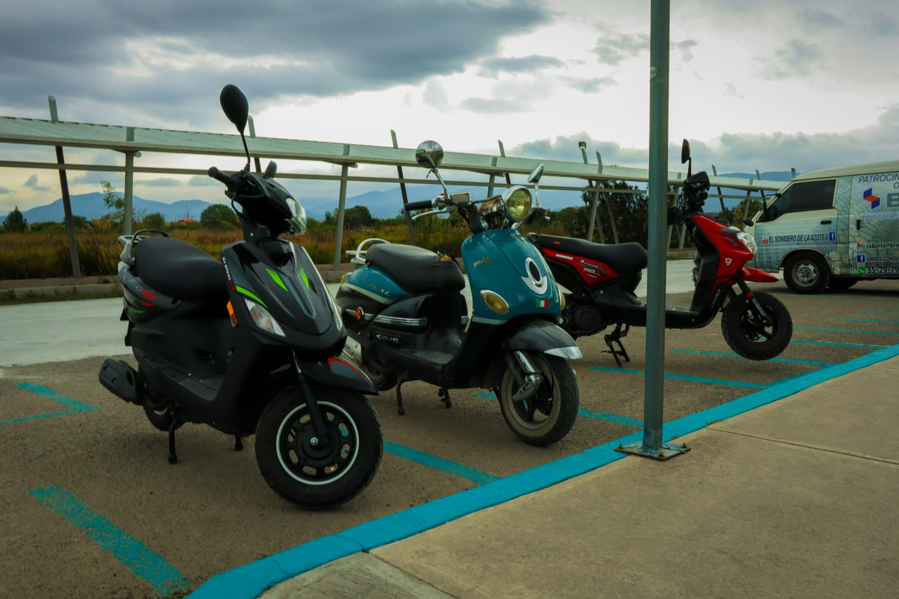
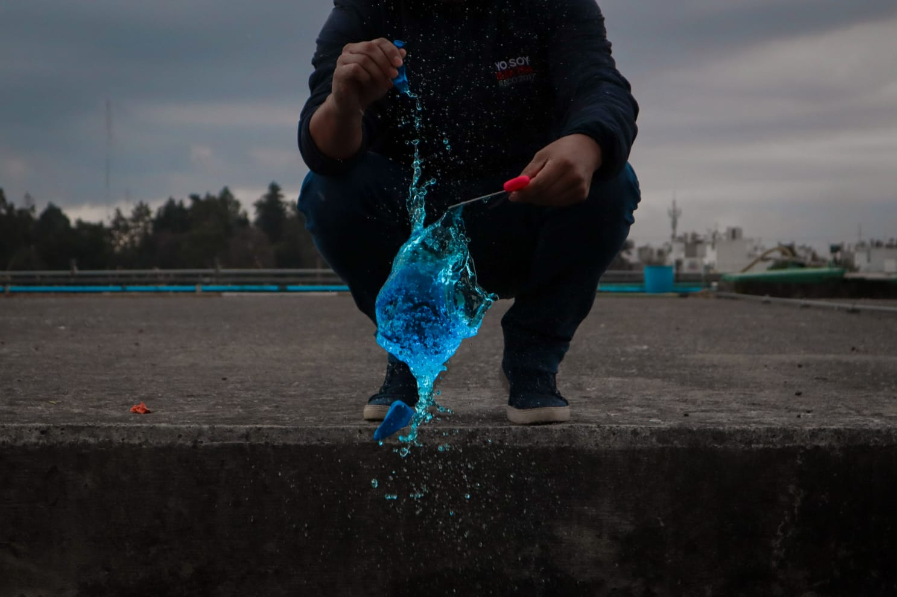
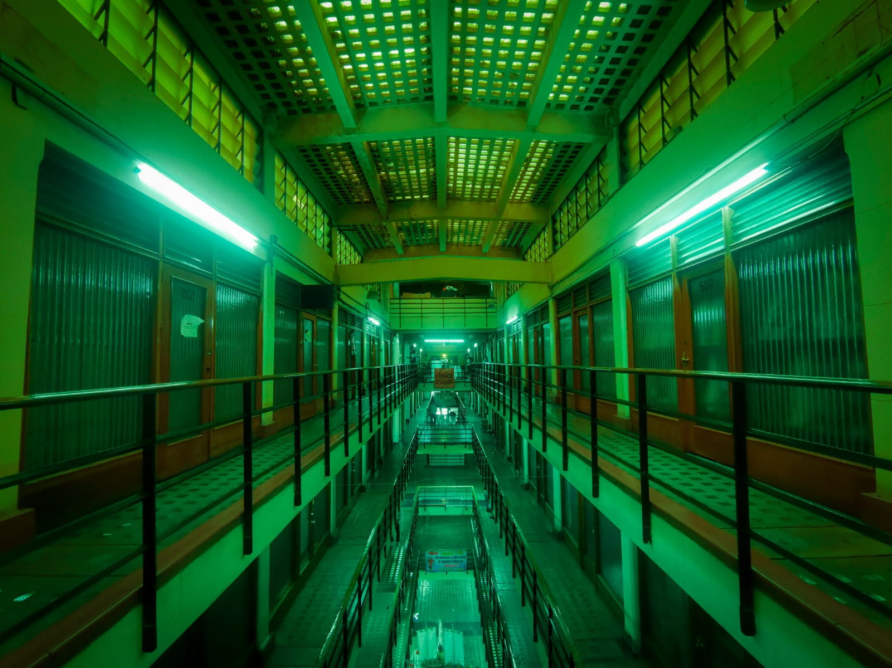
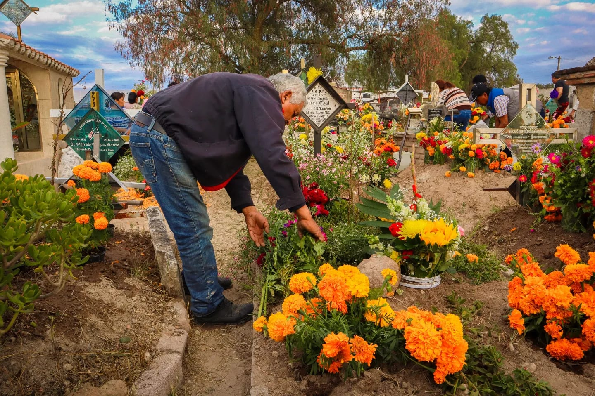
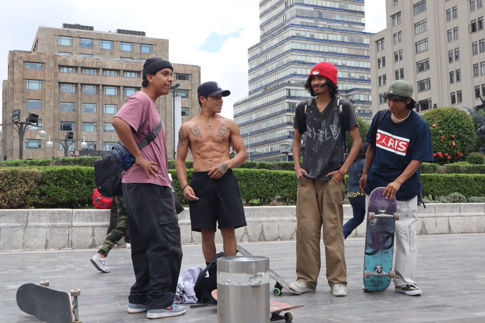
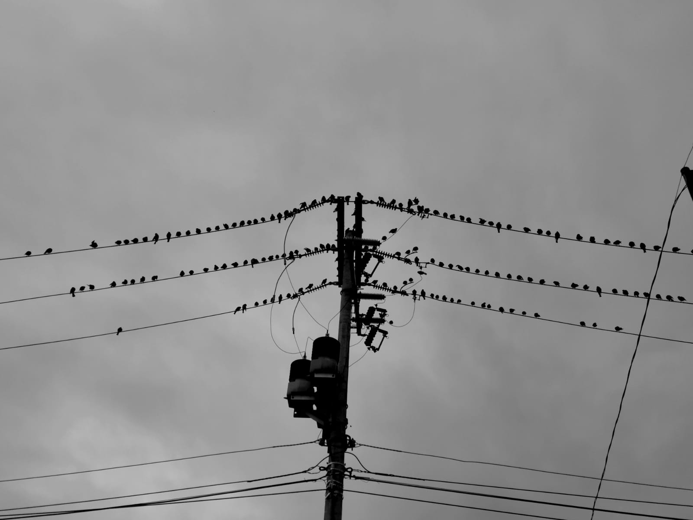
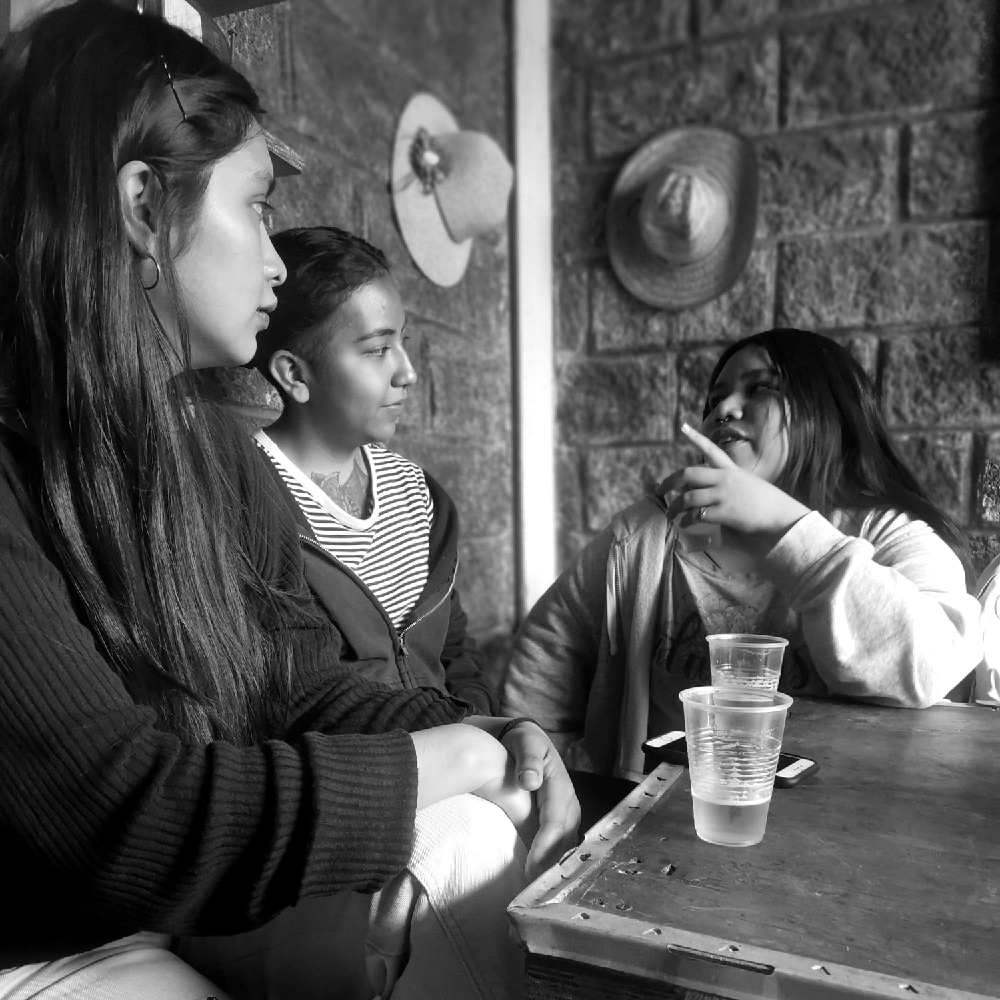

SOBRE MI
Isai es un artista digital de Tequixquiac Estado de México. Tiene 21 años de edad, actualmente se encuentra estudiando Arte y Comunicación Digitales en la Universidad Autónoma Metropolitana, unidad Lerma. También cuenta con un diplomado en Corel Draw, Photoshop e Illustrator. Es técnico en diseño asistido por computadora y ha participado en distintos proyectos locales relacionados a la fotografía y al video. Además de proyectos colaborativos.
        
....